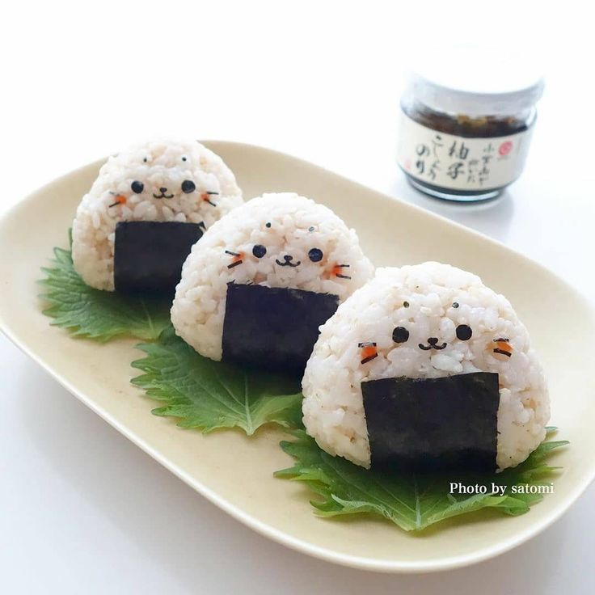
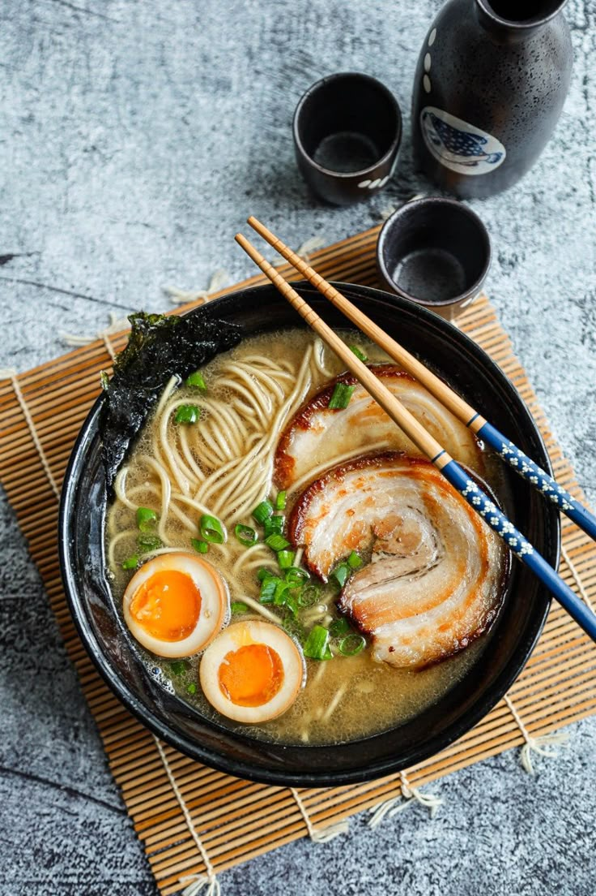
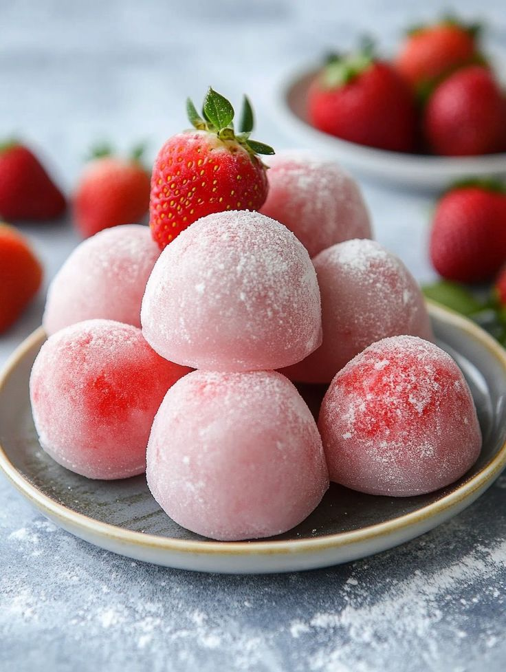
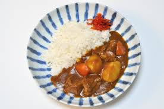

Sakura ağaçlarının gölgesinde Japonya’yı keşfetmeye hazır mısın?
Sakura Pages'e hoş geldiniz.
Arkanıza yaslanın ve Japonya hakkında bilgilenmenin, Japonca hakkında fikir sahibi olmanın tadını çıkarın.
Sizi Japonya'ya doğru bir yolculuğa çıkarıyoruz.
İster Japonya bölümünden Japonya hakkında bilgiler öğrenin, isterseniz Japonca kısmından günlük konuşmalar hakkında fikir sahibi olabileceğiniz bir dil yolculuğuna çıkın.
Sakura Pages her iki konuda da içerikleriyle sizi desteklemeye hazır. Öyleyse, başlayalım mı?
Foods
🍙 Onigiri (Japanese Rice Balls)
Ingredients:
2 cups Japanese rice
Grilled salmon (cut into small pieces)
Nori (seaweed sheet)
A pinch of salt
Preparation:
Rinse the rice thoroughly and drain. Cook the rice in a pot or rice cooker.
Add a small amount of salt to the cooked rice and mix.
Take a handful of rice and place salmon in the center.
Shape the rice around the salmon into a triangle.
Wrap the outside of the onigiri with nori sheet.
Serve or store for later.
Cultural Significance: Onigiri is one of the most popular convenient snacks in Japan. It is especially easy to eat during picnics, at school, or at work.

🍜 Ramen (Japanese Noodle Soup)
Ingredients:
Ramen noodles
Chicken or pork broth (3 cups)
Boiled egg
Green onion
Mushrooms and nori (optional)
Preparation:
Bring your chicken or pork broth to a boil.
Boil the ramen noodles according to package instructions.
Season the broth with salt and soy sauce.
Cut the boiled egg in half.
Put noodles in bowls first, then pour broth on top.
Top with egg, green onion, mushrooms, and nori, then serve.
Cultural Significance: Ramen is a popular fast food in Japan, with many regional variations, and holds an important place in Japanese culture.

🍣 Sushi (Japanese Fish and Rice Dish)
Ingredients:
Sushi rice
Fresh raw fish (salmon, tuna, etc.)
Nori (seaweed)
Wasabi and soy sauce
Preparation:
Prepare sushi rice seasoned with special sushi vinegar.
Spread a thin layer of rice on a nori sheet.
Place slices of fresh fish on top.
Roll and cut or shape as nigiri.
Serve with wasabi and soy sauce.
Cultural Significance: Sushi is one of the most internationally recognized Japanese dishes and is known for its freshness.
🍡 Mochi (Japanese Sweet)
Ingredients:
Mochi rice flour (glutinous rice flour)
Water
Sugar
Sweet filling (e.g., red bean paste)
Preparation:
Mix mochi flour, water, and sugar until dough-like consistency.
Steam the dough for about 15 minutes.
After cooling, tear into small pieces, put filling inside, and shape into balls.
Optionally dust with powdered sugar or cornstarch.
Cultural Significance: Mochi is a traditional sweet eaten during New Year's and special occasions in Japan.

🍛 Curry Rice (Japanese-style Curry Rice)
Ingredients:
Curry sauce (store-bought or homemade)
Rice
Potatoes, carrots, onions
Meat (chicken, pork, or beef)
Preparation:
Cook the rice.
Sauté meat and vegetables in a pan.
Add curry sauce and simmer on low heat.
Serve the sauce over the rice.
Cultural Significance: Curry Rice is a Western-inspired but much-loved dish prepared in the Japanese style.

🎵 Japon Müzikleri
Japon müziğinin renkli dünyasına hoş geldiniz! Anime açılışlarından pop baladlara kadar, Japonya’nın seslerini keşfedin.
YOASOBI – 夜に駆ける (Yoru ni Kakeru)
Tür: J-Pop
Hikâye temelli sözleri ve dijital sound'u ile Japon gençliği arasında ikonikleşmiştir.